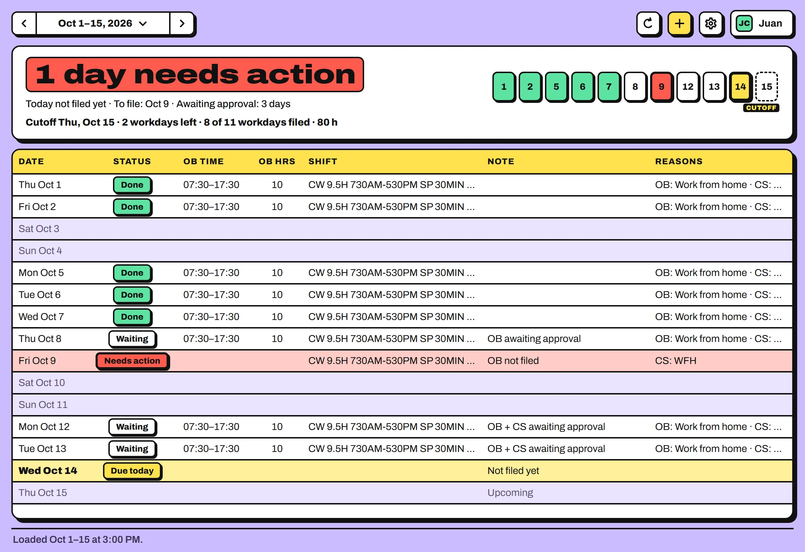
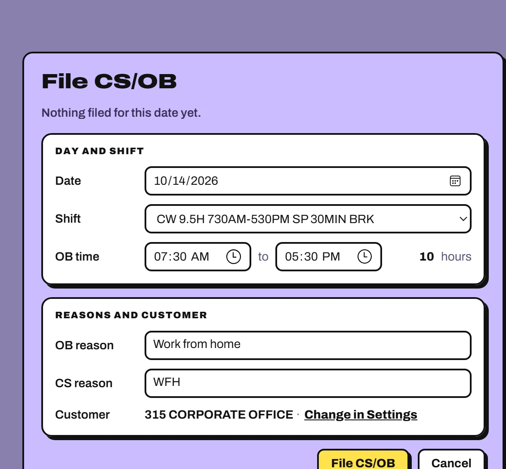
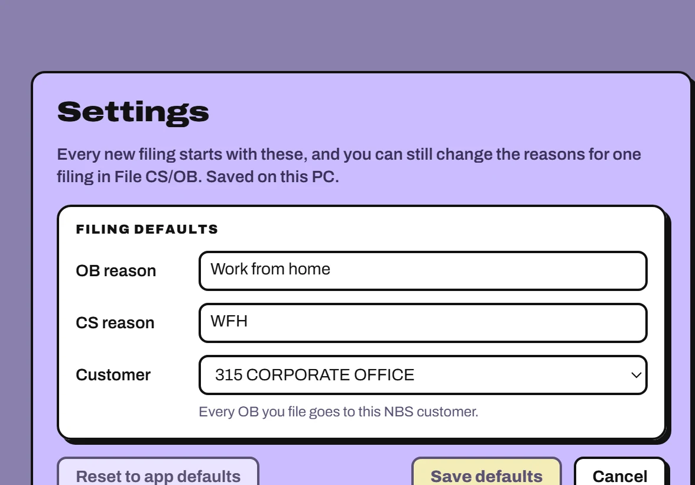
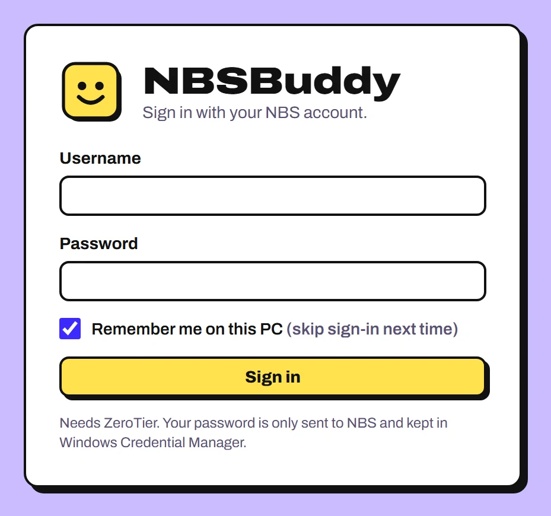

I file your OB and CS.
Pick your shift and I file both in NBS, then show every workday of your payroll period as a sticker, so nothing slips past cutoff.
Every workday of the payroll period gets one sticker, and cutoff is its last workday.
What do I get?
One board for the whole payroll period, 1–15 or 16 to the end of the month. Every workday wears one sticker, and the red one is what to fix before cutoff.

- DoneOB and CS are both approved.
- WaitingFiled, waiting for approval.
- Needs actionMissing, disapproved, or the times don't match the shift.
- Due todayToday isn't fully filed yet.
Sample data. Your board shows your own NBS filings.
How fast is filing?

Two clicks. The OB times and hours come from your shift, and I file OB and CS together, skipping whatever NBS already has.
- Pick your shift
- Press File CS/OB
Filed the wrong shift?Delete it while it's still For Approval, then file the day again.
Set it up once.
Your usual OB reason, CS reason and NBS customer live in Settings, saved on this PC. You can still change the reasons for a single filing.

- File today with Ctrl + N, or double-click any day.
- Reload the period from NBS with F5.
- Open Settings with Ctrl + ,.
Is my login safe?
Fair question. Here's what happens to your password, and where to check every word in the code.

-
Your password goes to NBS and nowhere else.
Every request goes to NBS's own address on the company network. The only others go to GitHub, to check for a newer NBSBuddy and download it, and they send nothing about you.
Read it in nbs.rs -
Remember me uses Windows Credential Manager.
Your password is kept there, encrypted for your Windows account, and NBSBuddy never writes it anywhere else. Log out forgets it. Your username and filing defaults are saved on this PC.
Read it in creds.rs -
The window you click can't reach the internet.
The screen only talks to the app's own core, and only the core goes online: to NBS, and to GitHub for updates.
Read it in tauri.conf.json -
It's unofficial, and all of it is public.
A colleague made it, not IT or the NBS vendor. The installer isn't code-signed yet, and every line it's built from is on GitHub.
See the source on GitHub
How do I install it?
- Download and run it.Run NBSBuddy-setup.exe. No admin rights needed. You only install once: after that NBSBuddy updates itself.
- Connect ZeroTier.NBS only answers on the company network, so keep ZeroTier on whenever you use NBSBuddy.
- Sign in.Use your NBS username and password. Tick Remember me to skip this next time.
“Windows protected your PC”?
The installer isn't code-signed yet, so SmartScreen asks first. Click More info, then Run anyway.
Microsoft Defender SmartScreen prevented an unrecognized app from starting.
More info